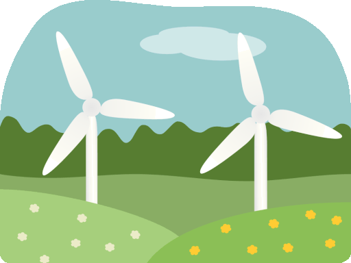
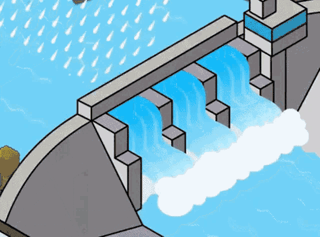
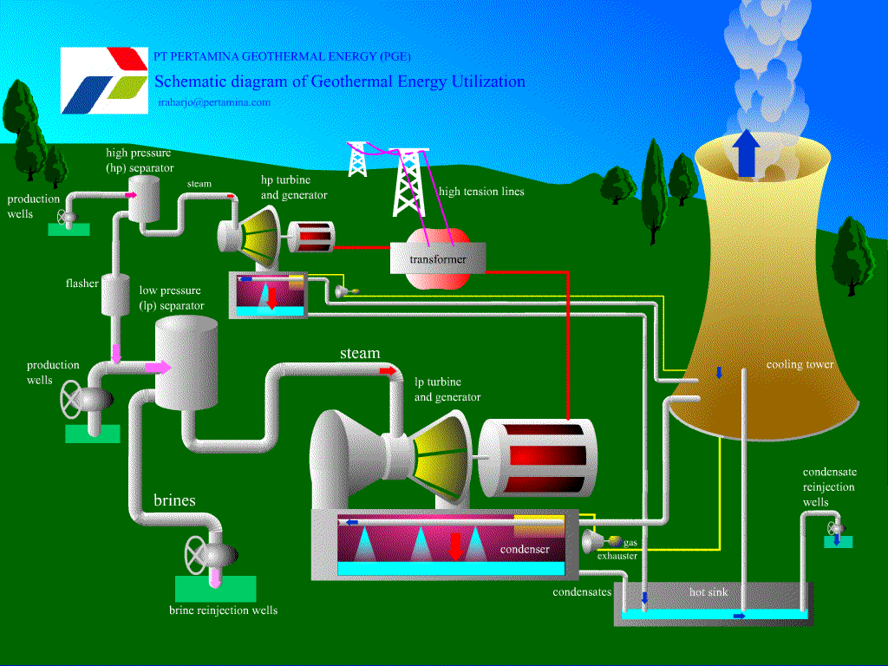
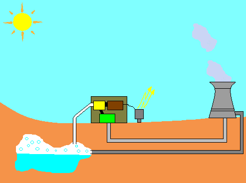
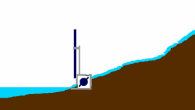
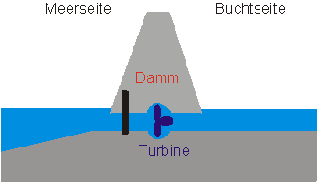
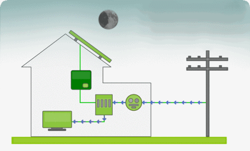

A energia solar é uma fonte inesgotável e limpa que utiliza a luz do sol para gerar eletricidade. A tecnologia fotovoltaica converte diretamente a luz solar em eletricidade por meio de painéis solares compostos por células fotovoltaicas. Essas células capturam fótons de luz, liberam elétrons, gerando uma corrente elétrica. A eletricidade produzida pode ser usada imediatamente ou armazenada para uso posterior. Essa forma de geração de energia contribui para a sustentabilidade ambiental e a independência energética.
A energia eólica utiliza o vento para gerar eletricidade, sendo uma fonte renovável adotada globalmente para reduzir a dependência de combustíveis fósseis. Turbinas eólicas convertem a energia cinética do vento em eletricidade por meio de pás conectadas a geradores. A eficiência depende da velocidade do vento, e as turbinas são projetadas para faixas específicas. Este método contribui para a mitigação de impactos ambientais associados a formas tradicionais de geração de energia.
A energia hidrelétrica usa a força da água para gerar eletricidade, comumente através de barragens. Ao represar e liberar água em quedas controladas, as turbinas são movidas, acionando geradores elétricos. Destacando-se pela confiabilidade, eficiência e longa vida útil, essa forma de energia renovável é considerada de baixo impacto ambiental em comparação com fontes não renováveis.
A energia biomassa é uma fonte renovável que utiliza matéria orgânica, como resíduos agrícolas e florestais, para gerar calor, eletricidade ou biocombustíveis. A combustão de resíduos produz calor, usado diretamente ou para acionar turbinas geradoras de eletricidade. Além disso, a produção de biocombustíveis, como biodiesel e etanol, a partir de culturas como milho e cana-de-açúcar, faz parte dessa forma de energia.




A energia geotérmica aproveita o calor do interior da Terra para gerar eletricidade ou fornecer aquecimento direto. Usinas geotérmicas, de baixa, média ou alta temperatura, extraem água quente do subsolo. Nas de baixa e média temperatura, essa água é usada diretamente para aquecimento em edifícios ou processos industriais. Nas de alta temperatura, água quente ou vapor aciona turbinas conectadas a geradores, gerando eletricidade.
A energia das marés e correntes é uma forma inovadora de geração de energia renovável que usa o movimento das águas oceânicas para produzir eletricidade. Turbinas estrategicamente instaladas em estuários ou áreas costeiras capturam a energia cinética da água durante as mudanças de maré, gerando eletricidade.
A energia das ondas é uma forma promissora de geração de energia renovável que utiliza o constante movimento das ondas do mar para gerar eletricidade. Diferentes tecnologias estão sendo desenvolvidas, como dispositivos flutuantes conectados a sistemas hidráulicos ou elétricos, que convertem a energia cinética das ondas em eletricidade de maneira sustentável.
A energia híbrida combina diversas fontes para otimizar a produção e garantir um fornecimento mais estável. Essa abordagem capitaliza vantagens complementares de diferentes fontes renováveis, equilibrando suas limitações. Um exemplo comum é a combinação de energia solar e eólica para uma produção mais constante de eletricidade, reduzindo a dependência de uma única fonte e aumentando a confiabilidade do sistema.